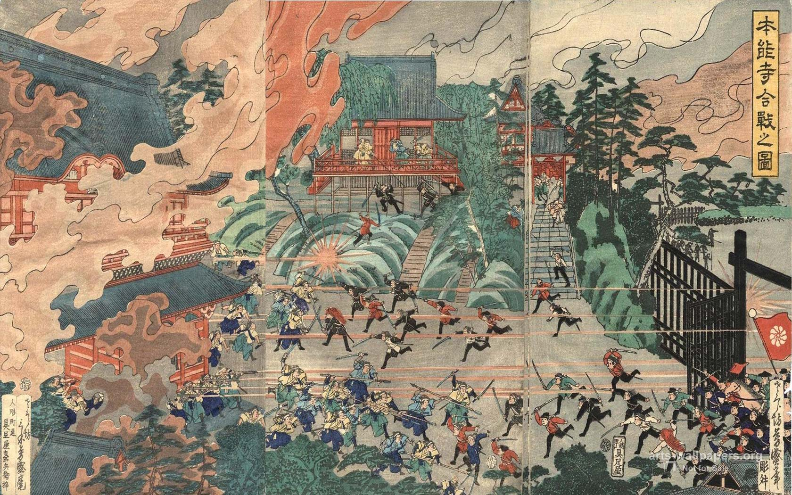

Web Artisan | PHP • HTML • CSS
Crafting digital spaces with quiet intention
I build websites with the same care a potter shapes clay. With tools of PHP, HTML, and CSS, I craft experiences that are clean, functional, and quiet. Based in Pakistan, I believe good design should not shout, but invite.
My work blends modern web techniques with the philosophy of wabi-sabi: finding beauty in simplicity and imperfection.

PHP + MySQL CRUD application with Bootstrap. Manage student records with add, edit, delete, and search functionality.
PHP • MySQL • Bootstrap
View Project →Custom WordPress theme inspired by traditional Japanese aesthetics. Clean typography, responsive layout, custom post types.
WordPress • PHP • CSS
View Project →This very site. Built with HTML, CSS, and Bootstrap. Designed to feel like unrolling an old Japanese scroll.
HTML • CSS • Bootstrap • JS
View Code →If you seek a website built with care and attention, let us speak.
印xqadeerx@gmail.com